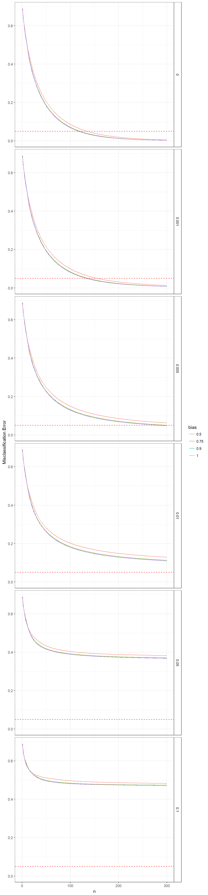

The function oracle_miss in the mupdog package will calculate \(E[1(\hat{y} \neq y)]\), where \(1(\cdot)\) is the indicator function, \(y\) is the true genotype, and \(\hat{y}\) is the estimated genotype. This assumes perfect knowledge of all parameters in the model, and so is the oracle misclassification error rate. The expecation is taken over both \(\hat{y}\) and \(y\). Here, I vary the allele bias, overdispersion parameter, and sample size, to get a rough idea of the the read-depth needed to accurately genotype individuals.
Set up parameters.
library(mupdog)
library(tidyverse)
bias_vec <- c(0.5, 0.75, 0.9, 1)
seq <- 0.01
od_vec <- c(0, 0.001, 0.005, 0.01, 0.05, 0.1)
n_vec <- 0:300
allele_freq <- 0.5
ploidy <- 6
dist <- dbinom(x = 0:ploidy, size = ploidy,
prob = allele_freq, log = FALSE)Set up settings.
errdat <- as_data_frame(expand.grid(bias = bias_vec, od = od_vec, n = n_vec))
errdat$seq <- seq
errdat$ploidy <- ploidy
errdat$allele_freq <- allele_freqCalculate oracle misclassification error rates.
miss_err <- rep(NA, length = nrow(errdat))
for (index in 1:nrow(errdat)) {
miss_err[index] <- oracle_miss(n = errdat$n[index],
ploidy = errdat$ploidy[index],
seq = errdat$seq[index],
bias = errdat$bias[index],
od = errdat$od[index],
dist = dist)
}
errdat$miss_err <- miss_errPlot results. Red horizontal line is at a misclassification error rate of 0.05.
ggplot(data = errdat, mapping = aes(x = n, y = miss_err, col = as.factor(bias))) +
geom_line() +
theme_bw() +
facet_grid(od ~.) +
theme(strip.background = element_rect(fill = "white")) +
geom_hline(yintercept = 0.05, col = "red", lty = 2) +
scale_color_discrete(name = "bias") +
ylab("Misclassification Error")
Bias has a much lower affect on the misclassification error rate than I thought would be the case. For example, we can look at specific cases of n and od and see a much smaller bias only decreases the misclassification error rate by about 2 percent.
filter(errdat, n == 100, od == 0)$miss_err## [1] 0.08610 0.07116 0.06889 0.06832filter(errdat, n == 100, od == 0.001)$miss_err## [1] 0.09981 0.08382 0.08122 0.08080filter(errdat, n == 100, od == 0.01)$miss_err## [1] 0.2019 0.1842 0.1806 0.1802Even a tiny amount of overdispersion can have a huge affect on the oracle misclassification error rate. At 0.1 you can’t do better than 50%
filter(errdat, n == 300, od == 0.1)$miss_err## [1] 0.4821 0.4729 0.4715 0.4713In the updog paper, at an od of 0.1, we saw misclassification error rates of about 50%, indicating that updog is near optimal.
sessionInfo()## R version 3.4.3 (2017-11-30)
## Platform: x86_64-w64-mingw32/x64 (64-bit)
## Running under: Windows 10 x64 (build 15063)
##
## Matrix products: default
##
## locale:
## [1] LC_COLLATE=English_United States.1252
## [2] LC_CTYPE=English_United States.1252
## [3] LC_MONETARY=English_United States.1252
## [4] LC_NUMERIC=C
## [5] LC_TIME=English_United States.1252
##
## attached base packages:
## [1] stats graphics grDevices utils datasets methods base
##
## other attached packages:
## [1] bindrcpp_0.2 forcats_0.2.0 stringr_1.2.0 dplyr_0.7.4
## [5] purrr_0.2.4 readr_1.1.1 tidyr_0.7.2 tibble_1.3.4
## [9] ggplot2_2.2.1 tidyverse_1.2.1 mupdog_0.0.1
##
## loaded via a namespace (and not attached):
## [1] Rcpp_0.12.14 cellranger_1.1.0 compiler_3.4.3 plyr_1.8.4
## [5] bindr_0.1 iterators_1.0.9 tools_3.4.3 digest_0.6.13
## [9] lubridate_1.7.1 jsonlite_1.5 evaluate_0.10.1 nlme_3.1-131
## [13] gtable_0.2.0 lattice_0.20-35 pkgconfig_2.0.1 rlang_0.1.4
## [17] psych_1.7.8 foreach_1.4.4 cli_1.0.0 rstudioapi_0.7
## [21] yaml_2.1.16 parallel_3.4.3 haven_1.1.0 xml2_1.1.1
## [25] httr_1.3.1 knitr_1.17 hms_0.4.0 rprojroot_1.3-1
## [29] grid_3.4.3 glue_1.2.0 R6_2.2.2 readxl_1.0.0
## [33] foreign_0.8-69 rmarkdown_1.8 modelr_0.1.1 reshape2_1.4.3
## [37] magrittr_1.5 backports_1.1.2 scales_0.5.0 codetools_0.2-15
## [41] htmltools_0.3.6 rvest_0.3.2 assertthat_0.2.0 mnormt_1.5-5
## [45] colorspace_1.3-2 labeling_0.3 stringi_1.1.6 lazyeval_0.2.1
## [49] munsell_0.4.3 broom_0.4.3 crayon_1.3.4This R Markdown site was created with workflowr